キメ顔は出来ないけれど [梅吉]
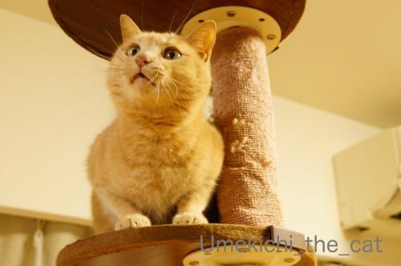
梅吉さんが真剣に見つめているのは
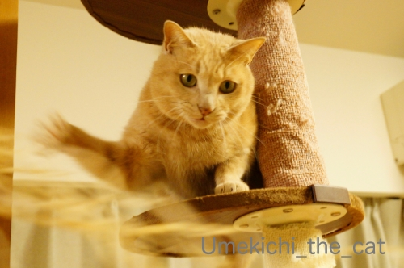
おかーさんが華麗に振り回しているひもー！！
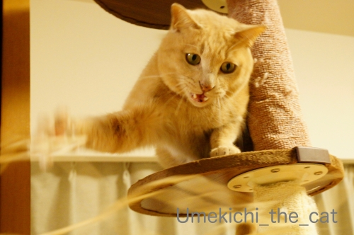
必殺ねこぱーんちっ ☆

梅吉はくりくりお目目の可愛らしい容姿ではないし
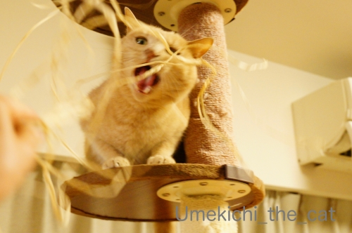
モデル系の美にゃんでもありませんが
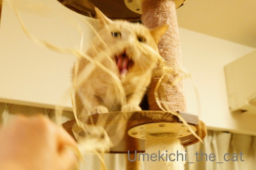
こういう表情と面白い仕草はなかなかのものだと思っております( ´艸｀)
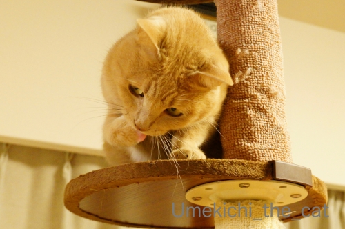
あにゃたにはキメ顔はなくても大丈夫みたい(≧▽≦)
先週はくつしたにゃんさんのお家のくつしたちゃん（かわいいお名前でしょ＾＾）
marimoさんのお家の美にゃんのNaoちゃんと相次いで虹の橋の向こうに旅立ってしまった。
大切な家族を亡くされたお二人の気持ちを思うと胸が痛いです。
あちこちの皆様のコメントを拝見すると虹の橋の向こうでは
動物好きな「志村けん」（親しみを込めて継承は略してます）が園長を勤めているそうな。
きっと悪くない世界だよね=´ᆺ`=
そして先に旅立った子たちは下僕に「その時」が来ると橋のたもとまで迎えにきてくれるらしい。
梅吉は私とおっとのことを憶えていて迎えに来てくれるだろうか・・・・・
遊びに夢中になってうっかりしたり
カツオのたたきを持っている人がいたら付いていってしまいそう(⌒-⌒;
ちゃんと迎えにきてもらえるように今この時を全力でお仕えしなければ！
 ↑ガブッと一押し↑
↑ガブッと一押し↑
4月5日、大阪は冷たく強い風が。
今頃外では盛大に花吹雪が舞っていると思われます。
今年は歩いて回れる範囲でお花を楽しみました。
近くの神社の御田のレンゲ。
公園のネモフィラ。
毎年お花見している近所の「なんちゃって千鳥ヶ淵」
年々木が大きく育って花つきも良くなっていて嬉しい＾＾
来年は穏やかな気持ちでお花見ができますように。
ここならおばあちゃんになっても通えます＾＾
植物って逞しいですよね。
人間もこうありたい・・・・・

あ、あなたはー！！
この梅吉似のひつじさん、近所にもう一体あるのを発見しました。
洋菓子屋さんのオリジナルだと思っていたのですが違うようです(≧▽≦)
今年のお花見散歩は徹底して「三密」を避けての行動。
我が家近辺は人との距離が十分保てる開けた場所がたくさんあってありがたい。
で、「三密」なんですが私はどうしても「壇蜜」さんを思い出してしまうー！！
それに「濃厚接触」が加わるとねぇ(〃▽〃)
なんだか不謹慎ですみませんです(⌒-⌒;
「三密」の内容はみなさまは十分にご存知かと思いますが
さらにわかりやすくと「集近閉：しゅうきんぺい」と説明されることもw
集＝人が集まる所
近＝近くでの会話や交流
閉＝閉鎖や密閉、換気の悪い環境 を避けましょう。
どこぞの国家元首とは一切関係ありません！？(*>艸<)
梅吉さんが真剣に見つめているのは
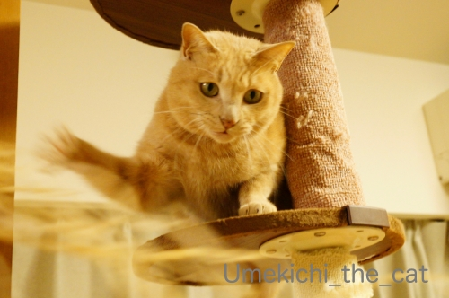
おかーさんが華麗に振り回しているひもー！！
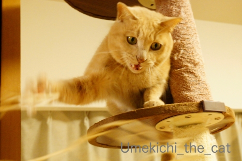
必殺ねこぱーんちっ ☆
梅吉はくりくりお目目の可愛らしい容姿ではないし
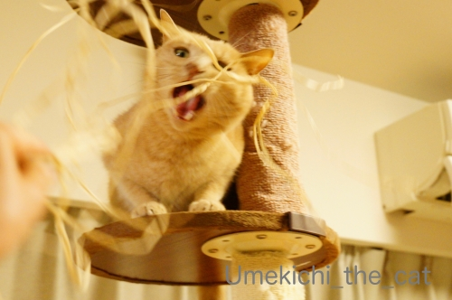
モデル系の美にゃんでもありませんが
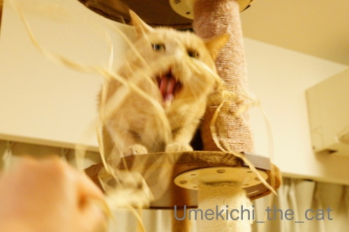
こういう表情と面白い仕草はなかなかのものだと思っております( ´艸｀)
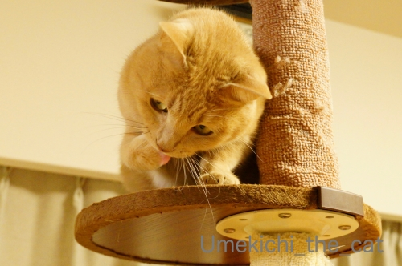
あにゃたにはキメ顔はなくても大丈夫みたい(≧▽≦)
先週はくつしたにゃんさんのお家のくつしたちゃん（かわいいお名前でしょ＾＾）
marimoさんのお家の美にゃんのNaoちゃんと相次いで虹の橋の向こうに旅立ってしまった。
大切な家族を亡くされたお二人の気持ちを思うと胸が痛いです。
あちこちの皆様のコメントを拝見すると虹の橋の向こうでは
動物好きな「志村けん」（親しみを込めて継承は略してます）が園長を勤めているそうな。
きっと悪くない世界だよね=´ᆺ`=
そして先に旅立った子たちは下僕に「その時」が来ると橋のたもとまで迎えにきてくれるらしい。
梅吉は私とおっとのことを憶えていて迎えに来てくれるだろうか・・・・・
遊びに夢中になってうっかりしたり
カツオのたたきを持っている人がいたら付いていってしまいそう(⌒-⌒;
ちゃんと迎えにきてもらえるように今この時を全力でお仕えしなければ！
4月5日、大阪は冷たく強い風が。
今頃外では盛大に花吹雪が舞っていると思われます。
今年は歩いて回れる範囲でお花を楽しみました。
近くの神社の御田のレンゲ。
公園のネモフィラ。
毎年お花見している近所の「なんちゃって千鳥ヶ淵」
年々木が大きく育って花つきも良くなっていて嬉しい＾＾
来年は穏やかな気持ちでお花見ができますように。
ここならおばあちゃんになっても通えます＾＾
植物って逞しいですよね。
人間もこうありたい・・・・・
あ、あなたはー！！
この梅吉似のひつじさん、近所にもう一体あるのを発見しました。
洋菓子屋さんのオリジナルだと思っていたのですが違うようです(≧▽≦)
今年のお花見散歩は徹底して「三密」を避けての行動。
我が家近辺は人との距離が十分保てる開けた場所がたくさんあってありがたい。
で、「三密」なんですが私はどうしても「壇蜜」さんを思い出してしまうー！！
それに「濃厚接触」が加わるとねぇ(〃▽〃)
なんだか不謹慎ですみませんです(⌒-⌒;
「三密」の内容はみなさまは十分にご存知かと思いますが
さらにわかりやすくと「集近閉：しゅうきんぺい」と説明されることもw
集＝人が集まる所
近＝近くでの会話や交流
閉＝閉鎖や密閉、換気の悪い環境 を避けましょう。
どこぞの国家元首とは一切関係ありません！？(*>艸<)

カフェオレ色の梅吉

梅吉 2023年8月10日 永眠


梅吉と出会った譲渡会

犬猫の理由なき殺処分ゼロ
妄想広告
UMEKICHI 光

爆発的に早い！
時々攻撃的！
Thanks to Mr.Boss365
爆発的に早い！
時々攻撃的！
Thanks to Mr.Boss365

梅吉さんは愛嬌のある萌系(^^♪
まさに猫界のアイドルになる存在です。
先に逝っても待ってくれるという考えは素敵すぎます。
yamatonosukeの場合は鹿がお迎えに来てくれるかな(笑)
梅吉似のひつじさんはもう購入するしかありませんね～
壇蜜さんと濃厚接触とはそれ皆が外出するヤツです☆
by yamatonosuke (2020-04-06 01:33)
梅吉さんのヒモを噛もうとしてお口を開けてる様子が可愛いです。
梅羊さんがもう一人いたんですね。これフツーに売ってる物だったのかしら。
ちぃさんもひとつお買いになってはいかが?
by zombiekong (2020-04-06 02:30)
紐でこれだけ遊んでくれるならオモチャは要らないね？（ﾟ□ﾟ）
虹の橋の向こうに志村園長が居るなら、だいじょうぶだ～
by 英ちゃん (2020-04-06 06:43)
実家で飼ってた子もいるし、だれが待っててくれるか楽しみでもあります＾＾
by ぽちの輔 (2020-04-06 06:48)
サイドから猫パンチ。野球で例えるとサイドスロー^^
by ニコニコファイト (2020-04-06 07:03)
梅吉さんはイケメンだし、とっても可愛いお顔も見せてくれますよぉ=(^.^)=
うちの常にほけほけの顔しか見せてくれない大御所に比べるとカッコイイニャンコさんです♪( ´▽｀)
先代猫に、今一緒に暮らしてる４ニャン、虹の橋の向こうで
忘れずにお迎えしてくれるのは、我が家だとかみさん限定かも(*_*)
かみさんよりも先に私だったら、来てくれるかもしれないけど
かみさんの方が先だったら私のことは忘れて皆で楽しんでそうです( ；´Д｀)
by ニッキー (2020-04-06 07:24)
梅吉さんは、ワル顔でも、いたずら顔でも、梅吉さんらしくてとっても良いのです～。いかにも猫様らしい感じが好みです♪
現在、家の前の桜は残っている花と出てきた葉っぱが混じって、一番、きれいではない時期に入っております(:_;) つまらんー。
羊さん！いやー、もしかしたら、府とか市とかのマスコットだったりして。
他にもいらっしゃるかもしれませんぞ。
三密≒壇蜜、さっき、猫毬さんところでも見て、ウケてました。
by ChatBleu (2020-04-06 09:04)
こんにちは！
私にとってもなついて家まで付いて来る
ご近所のニーナちゃんによく似ているんです！
猫嫌いだったんですがニーナちゃんのお陰で
今ではニャンコさんもお友達です！
by Take-Zee (2020-04-06 09:28)
梅吉さん紐に夢中ですね！
今回のウイルスは中国人が世界にばらまいたウイルスで中国が最初の封じ込めに失敗したのが大きいですね。
by ma2ma2 (2020-04-06 09:51)
梅吉さん、必死のパ～ンチ！
その後のやすらか～な満足顔は最高ですね(^_^)
うちの猫の虹の橋を渡って２年になりますが、志村さんに大好きな煮干しもらってスリスリしてるかも。
by kou (2020-04-06 10:30)
虹の橋のお話、ラストは私達を迎えに来てくれるんですよね(^^
過去に旅立った子たちが全員勢ぞろいで迎えてくれるかなぁｗ
梅吉さんはひょうきん者でみんなを笑顔にしてくれます♪
三密、猫毬さんのところにまさに壇蜜さんの写真と「三密」とあって
朝から爆笑してしまいました。
羊の看板、あれは販促グッズ売り場K何かで売っているものなのでしょうかね？
おちりから太ももにかけての脚線が艶めかしいｗ( *´艸｀)
by marimo (2020-04-06 11:04)
一枚目のお写真！
子猫のようです(#^.^#)
どんなお顔でも我が子は
可愛くてたまりませんよね♪
by きぃ (2020-04-06 12:20)
ちぃさんの見事なヒモさばき！！
新体操の選手かと思っちゃいました(#^^#)
1枚目のお髭ぶわっと前回のわくわく顔、とってもキュートですよ～♪
ヒモを追いかけてチラチラ見える牙も大好物。
虹の橋どうぶつえんでみんな大集合して遊んでると思うと、気持ちが和らぎますね。
私も猫毬さんところで「三蜜」見て爆笑したところです(≧▽≦)
ウチのはビビリだけれどきっと食欲が勝つので、美味しいオヤツを持ってる人について行ってしまうのではと心配です( ;∀;)
by ゆきち (2020-04-06 12:21)
梅吉君はじゅうぶんイケニャンだと思うのよ！
そして悪顔もお似合いなのよ！！
モデル顔はあおくんに任せて（ｗｗｗ）
梅吉君はアクティブ系で攻めてください♪
三密は、じつはわたしも壇蜜さんを思い浮かべてましたｗ
同じく思ってる人がいて笑う^^
by リュカ (2020-04-06 14:00)
こんにちは。
梅吉君、春の動きだし？活性ある写真アップですね。
お口開けて牙だしのリアルな良いお顔です。紐に叫んいる姿は俳優猫です！！
小生猫はすぐに寝転んでしまうので・・・
梅吉君のような写真が撮影が出来ない状況です。
旅立ちは、止める事が出来ませんが・・・
それまで、下僕なりの「悔いのないお仕事」を全うしたいですね。
4月5日強い風？ですが、心地良さそうな散策ですね。
「ど根性桜」を撮影！！皆さん、樹幹の桜が気になっているみたいです。
「集近閉：しゅうきんぺい」気に入りました（爆）！？(=^･ｪ･^=)
PS.ところで、梅吉君の写真を使いたいのですが・・・
勝手にブログ使用しても良いですか？
by Boss365 (2020-04-06 14:57)
梅吉さんの集中した顔、素敵ですよ＾＾。遊びに全力投球、かわいい。
私もトラチにちゃんと迎えに来てもらえるように、カツオのたたき持参ししようかな・・・。こしあんが好きだったから、そっちの方がいいかな・・・などとあれこれ考えて楽しんでしまいます。
レンゲの花、いいですね。花蜂も飛んでるかな。のどかそう♪
by Inatimy (2020-04-06 17:34)
梅吉さんはすらーっとしてて、しゅっとしてますよ！^^
表情豊かで素敵なにゃんこさん^^
集近閉！言えてますね！
三密…しかも濃厚接触となると～^^;
私は迎えに来てもらって、そのまま猫の天国に移住しそう^o^;
by sana (2020-04-06 18:42)
梅吉さん、若返った？＾＾；
お目目真ん丸ですね。
我が家のチビもいつもは目が細いのに、遊ぶときには真ん丸になります。
その変化を見るのが楽しみです＾＾
by riverwalk (2020-04-06 21:41)
いえいえ。梅吉さんはイケメンでスタイル抜群ですよ。
（少なくとも、ウチの猫よりは。^^;）
虹の橋の向こうの「志村どうぶつ園」でみんなで元気で遊んでいると思うと少し気が休まるかも。でも出来れば、園長もみんなも、もう少しこちらの世界にいて欲しかったな。。。
三蜜で濃厚接触～！！
言葉で聞くと羨ましいですが（何のこっちゃ）、いまは自粛ですね。 ^^;
もう一体、梅吉さん似のひつじさん、
ひょっとして、ひつじの街？？？
by yes_hama (2020-04-06 22:17)
いやいや、いっぱい決め顔お持ちなのでは。
いつも一発でメロメロ、（もしくは爆笑）です。
by liang (2020-04-07 08:43)
私も今日の記事はお花見ネタです。
「集近閉」という表現はしらなかったです！
どっかのライブでネタに使わせてもらいます。
･･･とは言うものの、ライブものきなみ中止で
使う機会がないのが寂しい。。。
ちぃさんが虹の橋を渡るときは、
カツオのたたき持参をお忘れなきように～(^_^;)
by よーちゃん (2020-04-07 11:17)
梅吉さんはそのおいしそうな毛色が十分に魅力的
ですよ。うちのモノクロ達よりもずっと写真映え
するし。虹の橋の向こうに志村動物園、考えただ
けでもウキウキしちゃいますね。うちの初代柴犬は
とても利口だったのでたぶんわたしが行ったら走っ
てきてくれると思うけど、二代目キヨちゃんはかな
りおバカだったので心配だわー。
by mio (2020-04-07 17:01)
梅吉ちゃんの下の牙がワイルドで
いいですねー(*^-^*)
ちぃさんのショットのタイミングもばっちし！！
虹の橋は実在して欲しいですよね。
いつかまたみんなで元気になって会えるという
希望の喜びが・・
しかしちぃさんたちよりも梅吉君のほうが
ワイルドで長生きするかも？？？
by ぱだおくん (2020-04-07 19:06)
こんにちは。
麻生大臣の国会答弁・発言動画です。
https://twitter.com/PeachTjapan2/status/1247112323266985984?ref_src=twsrc%5Etfw%7Ctwcamp%5Etweetembed%7Ctwterm%5E1247112323266985984&ref_url=http%3A%2F%2Ftoua2chdqn.livedoor.blog%2Farchives%2F56619875.html
by Boss365 (2020-04-08 15:42)
梅しゃま、どんなお顔も決まってますよ！
悪顔も白目も…ステキです♡
くつしたへメッセージありがとうございます(;_;)そこに居ないことが寂しくて仕方ない毎日です…
スマホの写真を繰ってみたり、梅しゃまやあおうみちゃんや他の御宅の猫さまを見に行ってみたり…
くつした、Naoさんと会えて楽しく過ごしてるといいなぁ…そして私もそこに混ざりたいwww
梅しゃま、ふたりの分も長生きさんでいてくださいね。お願いよ(^^)♪
by くつしたにゃん (2020-04-08 21:57)
一枚目の真ん丸なお顔が可愛い～
梅吉君はすらっと長いおみ足でスタイルバッチリじゃないですか
すんなり伸びた尻尾もカッコいい！
僕もらいむにしっかりお仕えして
お迎えしてもらえるようにがんばろう
by 藤並 香衣 (2020-04-09 01:23)